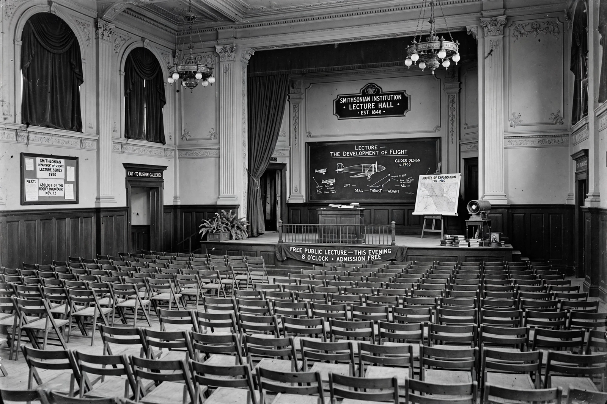

Great Debate (astronomy)

The Great Debate
| Date | 26 April 1920 |
|---|---|
| Venue | U.S. National Museum, Washington, D.C. |
| Participants | Harlow Shapley vs. Heber Doust Curtis |
| Questions | Scale of the Milky Way; nature of spiral nebulae |
| Outcome | Resolved observationally by Edwin Hubble, 1923–1925; each side partly correct |
The Great Debate, also called the Shapley–Curtis Debate, was a public scientific debate between astronomers Harlow Shapley and Heber Doust Curtis held on 26 April 1920 at the Smithsonian Museum of Natural History in Washington, D.C., as part of the annual meeting of the National Academy of Sciences. It concerned the scale of the universe and the nature of the spiral nebulae — two of the central open questions of the era — and is remembered as a landmark in the history of astronomy, though its resolution came not from the debate itself but from Edwin Hubble's observations a few years later.
The questions at issue
Shapley, of Mount Wilson Observatory, had used the period–luminosity relation for variable stars — based on work by Henrietta Leavitt at the Harvard College Observatory — to map globular clusters and concluded that the Milky Way was enormous, some 300,000 light-years across, with the Sun far from its centre. On his view, the spiral nebulae were relatively nearby gas clouds within this vast galaxy. Curtis, of Lick Observatory, defended the "island universe" theory: the Milky Way was much smaller (about 30,000 light-years), and spirals were independent galaxies like our own, whose observed novae and recessional velocities implied vast distances.
The debate
Each astronomer spoke for about 45 minutes, followed by rebuttals; expanded versions were published back-to-back in the Bulletin of the National Research Council in 1921 under the title "The Scale of the Universe". Contemporary accounts and later historians scored the evening variously — Curtis, the more polished speaker, was often judged to have performed better on the night — but the scientific verdict split. Shapley was right about the large Milky Way and the Sun's off-centre position, though he overestimated the galaxy's size because interstellar dust dimming was not yet accounted for. Curtis was right about the spirals.
Resolution
In 1923–1924, Hubble, using the 100-inch Hooker telescope at Mount Wilson, identified Cepheid variable stars in the Andromeda Nebula and applied Leavitt's law to show it lay far beyond the Milky Way — results announced on 1 January 1925 that settled the island-universe question and transformed humanity's picture of the cosmos. Shapley, on reading Hubble's letter, reportedly remarked to a colleague: "Here is the letter that destroyed my universe." The centenary of the debate was marked in 2020 by commemorations at the Smithsonian and elsewhere.
See also: Harvard College Observatory · Harlow Shapley · Edwin Hubble · Andromeda Galaxy